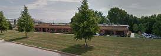
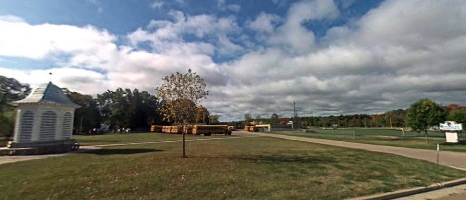
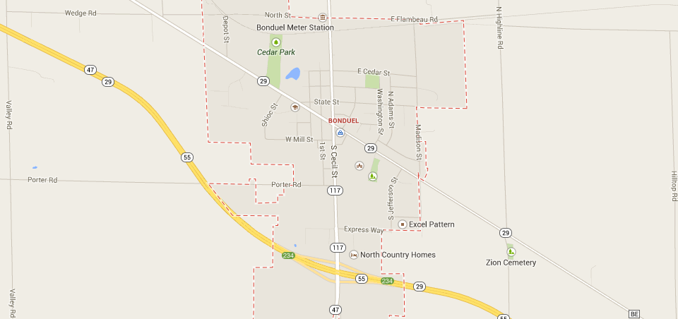

Moire Numbers
2013
A demo of an idea I had to display numbers while scrolling. It uses fixed vertical lines to white out certain pixel columns of bg.png which is a 7 segment display number that allows each segment to be turned on and off by blanking out some vertical columns.
Koch Triangle
2013
I really wanted to make a recursive fractal renderer so I made some Koch triangle demos. Try out these variations on the demo:
demo 2 or
demo 3 (drag your mouse).
Cards
2012
This was my pet project for about a year. It started with the idea of presenting the player with an empty table and a pile of cards and allowing them to play whatever card game they want. Players would be responsible for enforcing rules since there would be no built in restrictions. I ended up building a responsive widget system that works across mobile and desktop. Open the demo on your phone and computer at the same time to see it an action. Read more about it
here.
Mold
2012
This JavaScript library I built at i.TV combines Knockout style data binding with Mustache syntax. It's great for use with Backbone model binding.
jQuery-jsrallax
2011
I really wanted to make a parallax library for JavaScript so I found a designer and we made the inside of a cell. Click through to the live demo and move your mouse around to see it in action.
JS1k
2011
I participated in JS1k 2011, my entry was a top down shooter. I didn't end up placing but I had a lot of fun making it and I learned a lot. Use WADS to move and click to shoot.
Huffington Post TV (previously AOL TV)
2011
My first major project at i.TV was TV listings for AOL / Huffington Post. I was the main front-end engineer and I did most of the work on the grid. The grid was the first JavaScript driven TV listings grid that didn't require a full page refresh to load more listings. The site still sits in the first page of results of a Google search for tv listings.
i.TV
2010
I started working at i.TV in December of 2010. I learned a lot about Node.js, MongoDB, web app development and much more while working here.
BitE JS
2010
I was playing with making a pixel editor using canvas and ended up turning it into an animation editor. Pretty fun!
YouTube Without Flash
2009

I took over an open source
Greasemonkey script that replaced the flash player on YouTube with an embeded player like the VLC browser plugin. YouTube has since required the session cookie to be sent with the video file request slowing this plugin development to a grinding halt.
My First webapp
2009
The main language I was taught was Java and I only had a couple web development classes. The day we were taught JavaScript was a special one for me. I realized I could combine all the knowledge I had of making html and css websites with the programming knowledge I had been learning into a single webpage, host it on my home server, and make it accessible to the world with a single click. I was in love. I played with JavaScript a lot in my free time and I finally made this Tetris-like game.
College
2008

Despite it not being the most reputable college, I attended ITT Tech. I had some amazing professors who taught me well. I was fortunate enough attend college without working at the same time so I had plenty of time to play with computers and programs at home where I learned a lot on top of what I was already learning at school.
FreeBASIC
2006
Sometime while I was in high school I wrote my first program in a language called FreeBASIC. After making my first loop I remember realizing how powerful computers were. My life was ever changed at this point, I started comparing everything I thought about to basic programming constructs. I was hooked. I transitioned to using Linux as my main operating system.
First website
2005
The first website I built was for a web development competition for high school students. It's also the first website I ever developed without a book telling me what to make it look like. It's made from tables within tables within tables.
Bonduel High School
2003

I took many computer classes in high school, pretty much all of them in fact. There were no programming classes but I took a couple web development classes where I learned how to make table based websites with Dreamweaver. Apart from computer classes my favorites were wood shop, metal working, and auto repair classes.
Bonduel, WI
1996

Just after first grade my family moved to the middle of nowhere, Bonduel, WI, Population 1,478. We lived in the town for a few years before moving to a farm in the country.
Hello World
1989
I was born at St. Marys hospital in Green Bay, WI.